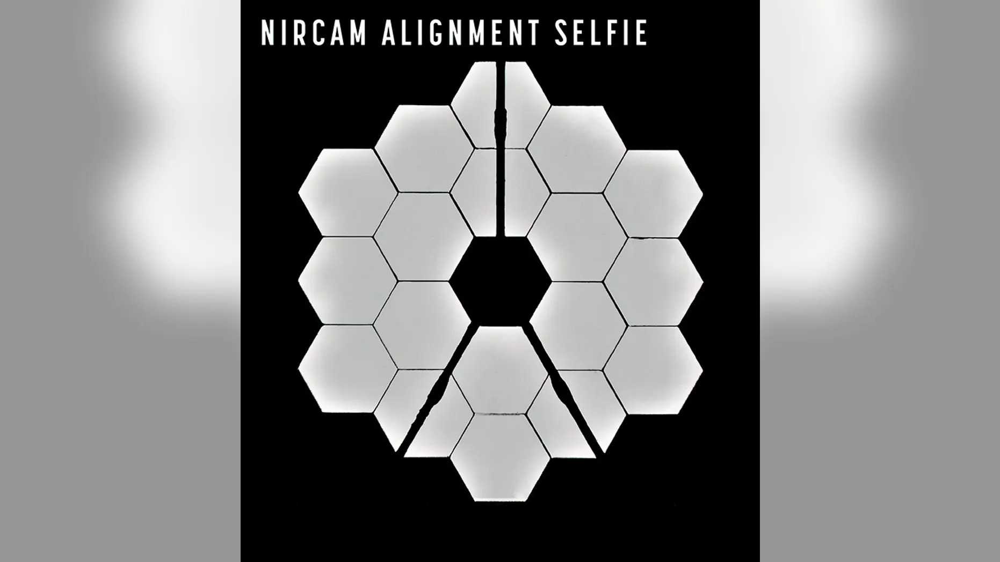

NASA's James Webb Space Telescope has reached another milestone, with the agency announcing that its main mirror is fully aligned....
NASA said the Webb team completed the stage of alignment known as "fine phasing" on March 11, with every optical parameter for Webb's Optical Telescope Element performing "at, or above, expectations.
The group also found no critical issues or measurable contamination or blockages to Webb's optical path.
NASA said the observatory is able to successfully gather light from distant objects and deliver it to its instruments without an issue.
"More than 20 years ago, the Webb team set out to build the most powerful telescope that anyone has ever put in space and came up with an audacious optical design to meet demanding science goals," Thomas Zurbuchen, associate administrator for NASA’s Science Mission Directorate, said in a statement. "Today we can say that design is going to deliver."
Webb – an international venture with the European Space Agency (ESA) and Canadian Space Agency – is the first telescope in space to use segmented primary mirrors, like the primary mirror's 18 hexagonal, beryllium segments.
The team has also now fully aligned Webb's primary imager, the Near-Infrared Camera, to the observatory’s mirrors.
Over the course of the next six weeks, the Webb team will further act to align the telescope to include the Near-Infrared Spectrograph, Mid-Infrared Instrument and Near InfraRed Imager and Slitless Spectrograph.
All of this comes before the $10 billion telescope's final alignment step will begin, in addition to adjustments of any small, residual positioning errors in the mirror segments.
"We have fully aligned and focused the telescope on a star, and the performance is beating specifications. We are excited about what this means for science," Ritva Keski-Kuha, deputy optical telescope element manager for Webb, said. "We now know we have built the right telescope."
NASA shared additional engineering images from its NIRCam instrument during the "fine phasing," revealing the star 2MASS J17554042+6551277 and galaxies and stars in the background. The image uses a red filter to optimize visual contrast.
At the beginning of alignment, NASA released a mosaic image, with 18 individual images of the star HD 84406.
A new "selfie" was also created using a specialized pupil imaging lens inside the NIRCam instrument that was designed to take images of the primary mirror segments. It shows all of Webb's 18 primary mirror segments collecting light from the same star in unison. The Webb team will include all aspects of Optical Telescope Element alignment by early May. Webb's first full-resolution imagery and science data will be released over the summer.
Julia Musto is a reporter for Fox News Digital. You can find her on Twitter at @JuliaElenaMusto.